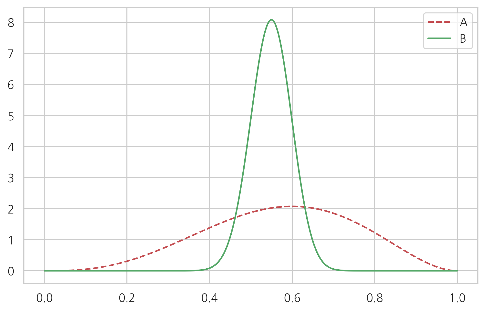
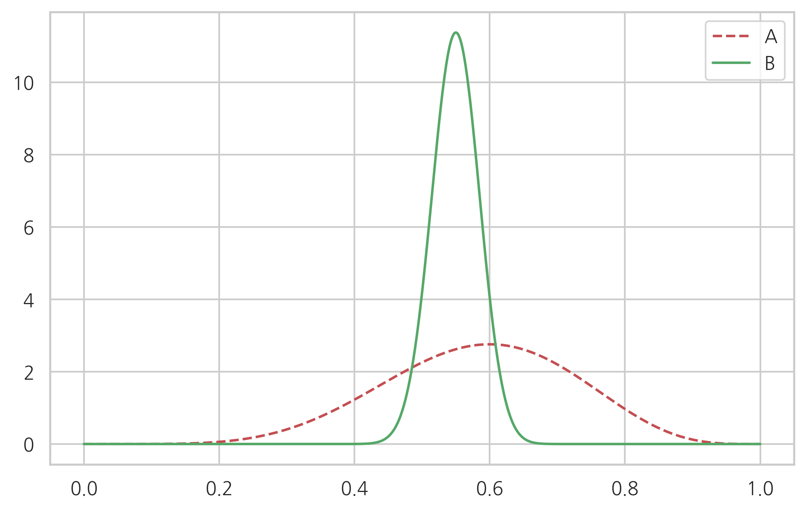

Test 2020-02-24¶
S = np.array([[4, -3], [-3, 4]])
l, V = np.linalg.eig(S)
l
array([7., 1.])
V
array([[ 0.70710678, 0.70710678],
[-0.70710678, 0.70710678]])
모멘트 방법¶
df = pd.DataFrame({"produce": [7, 8, 10, 11, 12, 14],
"days": [10, 10, 20, 30, 20, 10]},
columns=["produce", "days"])
df
| produce | days | |
|---|---|---|
| 0 | 7 | 10 |
| 1 | 8 | 10 |
| 2 | 10 | 20 |
| 3 | 11 | 30 |
| 4 | 12 | 20 |
| 5 | 14 | 10 |
이항분포의 \(N, \mu\)를 모멘트 방법으로 추정하라.
df["prob"] = df["days"] / df["days"].sum(axis=0)
mean = (df.produce * df.prob).sum()
mean
10.6
np.average(df.produce, weights=df.prob)
10.600000000000001
var = ((df.produce - mean)**2 * df.prob).sum()
var
3.6400000000000006
np.average((df.produce - mean)**2, weights=df.prob)
3.640000000000001
\[ N\mu = 10.6 \]
\[ N\mu(1-\mu) = 3.64 \]
\[ {N\mu(1-\mu) \over N\mu} = 1-\mu = 3.64 / 10.6 \]
\[ \mu = 0.66 \]
\[ N = 10.6 / \mu \approx 16 \]
df["type"] = "sample"
rv = sp.stats.binom(n=16, p=0.67)
df2 = pd.DataFrame({"produce": np.arange(17), "prob": rv.pmf(np.arange(17)), "type":"binomial"})
df2
| produce | prob | type | |
|---|---|---|---|
| 0 | 0 | 1.977985e-08 | binomial |
| 1 | 1 | 6.425455e-07 | binomial |
| 2 | 2 | 9.784216e-06 | binomial |
| 3 | 3 | 9.270297e-05 | binomial |
| 4 | 4 | 6.116992e-04 | binomial |
| 5 | 5 | 2.980643e-03 | binomial |
| 6 | 6 | 1.109462e-02 | binomial |
| 7 | 7 | 3.217919e-02 | binomial |
| 8 | 8 | 7.350019e-02 | binomial |
| 9 | 9 | 1.326468e-01 | binomial |
| 10 | 10 | 1.885193e-01 | binomial |
| 11 | 11 | 2.087734e-01 | binomial |
| 12 | 12 | 1.766139e-01 | binomial |
| 13 | 13 | 1.103322e-01 | binomial |
| 14 | 14 | 4.800167e-02 | binomial |
| 15 | 15 | 1.299439e-02 | binomial |
| 16 | 16 | 1.648910e-03 | binomial |
df3 = pd.concat([df, df2], axis=0)
df3
| days | prob | produce | type | |
|---|---|---|---|---|
| 0 | 10.0 | 1.000000e-01 | 7 | sample |
| 1 | 10.0 | 1.000000e-01 | 8 | sample |
| 2 | 20.0 | 2.000000e-01 | 10 | sample |
| 3 | 30.0 | 3.000000e-01 | 11 | sample |
| 4 | 20.0 | 2.000000e-01 | 12 | sample |
| 5 | 10.0 | 1.000000e-01 | 14 | sample |
| 0 | NaN | 1.977985e-08 | 0 | binomial |
| 1 | NaN | 6.425455e-07 | 1 | binomial |
| 2 | NaN | 9.784216e-06 | 2 | binomial |
| 3 | NaN | 9.270297e-05 | 3 | binomial |
| 4 | NaN | 6.116992e-04 | 4 | binomial |
| 5 | NaN | 2.980643e-03 | 5 | binomial |
| 6 | NaN | 1.109462e-02 | 6 | binomial |
| 7 | NaN | 3.217919e-02 | 7 | binomial |
| 8 | NaN | 7.350019e-02 | 8 | binomial |
| 9 | NaN | 1.326468e-01 | 9 | binomial |
| 10 | NaN | 1.885193e-01 | 10 | binomial |
| 11 | NaN | 2.087734e-01 | 11 | binomial |
| 12 | NaN | 1.766139e-01 | 12 | binomial |
| 13 | NaN | 1.103322e-01 | 13 | binomial |
| 14 | NaN | 4.800167e-02 | 14 | binomial |
| 15 | NaN | 1.299439e-02 | 15 | binomial |
| 16 | NaN | 1.648910e-03 | 16 | binomial |
sns.barplot(x="produce", y="prob", hue="type", data=df3)
plt.show()

MLE¶
(1) 베르누이분포의 모수 추정
\[ \{ 1, 0, 0, 0 \} \]
(2) 카테고리분포의 모수 추정
\[ \{ 1, 1, 1, 1, 2, 2, 2, 3, 3, 4 \} \]
(3) 이항분포의 모수추정:
\[ N = 4, N_1 = 1 \]
(4) 다항분포의 모수 추정
\[ N_1 = 4, N_2 = 3, N_3 = 2, N_4 = 1 \]
(5) 정규분포의 모수추정
\[ \{ 1,2, 3, 4, 5 \} \]
베이즈 추정¶
(1) 동일한 상품 다른 회사
상품 A: 전체 평가의견 5개, 좋아요 3개, 싫어요 2개
상품 B: 전체 평가의견 100개, 좋아요 55개, 싫어요 45개
xx = np.linspace(0, 1, 1000)
plt.plot(xx, sp.stats.beta(1+3, 1+2).pdf(xx), c="r", ls="--", label="A")
plt.plot(xx, sp.stats.beta(1+55, 1+45).pdf(xx), c="g", ls="-", label="B")
plt.legend()
plt.show()

(2) 상품평 추가
상품 A: 평가의견 5개 추가, 좋아요 3개, 싫어요 2개
상품 B: 전체 평가의견 100개, 좋아요 55개, 싫어요 45개
xx = np.linspace(0, 1, 1000)
plt.plot(xx, sp.stats.beta(1+3+3, 1+2+2).pdf(xx), c="r", ls="--", label="A")
plt.plot(xx, sp.stats.beta(1+55+55, 1+45+45).pdf(xx), c="g", ls="-", label="B")
plt.legend()
plt.show()

(3) 상품평이 품질을 정확히 반영한다는 가정(상품평이 더 좋으면 품질이 더 좋다.)하에 A의 품질이 B보다 좋을 확률은?
N = 1000000
a = sp.stats.beta(1+2, 1+1).rvs(N)
b = sp.stats.beta(1+65, 1+35).rvs(N)
(a > b).sum()/N
0.441095
검정¶
표본조사를 한 1000명 중 520명이 찬성하였다. 전체 인구가 찬성이 더 많다고 말할 수 있는가?
귀무가설은?
대립가설은?
양측/단측?
유의확률은?
rv = sp.stats.binom(1000, 0.5)
1 - rv.cdf(520 - 1)
0.10872414660212004
sp.stats.binom_test(520, 1000, 0.5, "greater")
0.10872414660212008
이항검정¶
(1) 1000가구 표본조사에서 40가구가 시청하고 있다. 시청율이 5%라고 할 수 있는가? (유의수준 5%)
rv = sp.stats.binom(1000, 0.05)
rv.pmf(40)
0.020821694204788944
rv.pmf(60)
0.019669659751570204
rv.cdf(40) + (1 - rv.cdf(60 - 1))
0.16736875164167136
sp.stats.binom_test(40, 1000, 0.05)
0.1673687516416663
(2) 1000가구 표본조사에서 70가구가 시청하고 있다. 시청율이 5%라고 할 수 있는가? (유의수준 5%)
sp.stats.binom_test(70, 1000, 0.05)
0.005670160942553233
(3) 1000가구 표본조사에서 시청율이 5%가 유의수준 5%에서 유의하려면 몇 가구가 시청해야 하는가?
x = np.arange(1001)
x[np.array(list(map(lambda x: sp.stats.binom_test(x, 1000, 0.05), x))) > 0.05]
array([37, 38, 39, 40, 41, 42, 43, 44, 45, 46, 47, 48, 49, 50, 51, 52, 53,
54, 55, 56, 57, 58, 59, 60, 61, 62, 63])
np.sqrt(1000*0.05*0.95) * 1.96
13.508367777048417
np.sqrt(1000*0.05*0.95)
6.892024376045111
import seaborn as sns
tips = sns.load_dataset("tips")
tips
| total_bill | tip | sex | smoker | day | time | size | |
|---|---|---|---|---|---|---|---|
| 0 | 16.99 | 1.01 | Female | No | Sun | Dinner | 2 |
| 1 | 10.34 | 1.66 | Male | No | Sun | Dinner | 3 |
| 2 | 21.01 | 3.50 | Male | No | Sun | Dinner | 3 |
| 3 | 23.68 | 3.31 | Male | No | Sun | Dinner | 2 |
| 4 | 24.59 | 3.61 | Female | No | Sun | Dinner | 4 |
| ... | ... | ... | ... | ... | ... | ... | ... |
| 239 | 29.03 | 5.92 | Male | No | Sat | Dinner | 3 |
| 240 | 27.18 | 2.00 | Female | Yes | Sat | Dinner | 2 |
| 241 | 22.67 | 2.00 | Male | Yes | Sat | Dinner | 2 |
| 242 | 17.82 | 1.75 | Male | No | Sat | Dinner | 2 |
| 243 | 18.78 | 3.00 | Female | No | Thur | Dinner | 2 |
244 rows × 7 columns
다음 주장의 유의성을 파악하라
목요일에는 여자가 남자보다 많다.
tips[tips.day == "Thur"].groupby("sex").size()
sex
Male 30
Female 32
dtype: int64
sp.stats.binom_test(32, 62, 0.5, "greater")
0.4495381568264295
토요일과 일요일에 남녀 손님의 비율은 다르다.
tips[tips.day == "Sat"].groupby("sex").size()
sex
Male 59
Female 28
dtype: int64
tips[tips.day == "Sun"].groupby("sex").size()
sex
Male 58
Female 18
dtype: int64
obs = np.array([[59, 28], [58, 18]])
sp.stats.chi2_contingency(obs)[1]
0.3037763422278197
남자손님이 여자손님보다 팁 비율이 높다.
tips["rate"] = tips.tip / tips.total_bill
tips.groupby("sex").rate.mean()
sex
Male 0.157651
Female 0.166491
Name: rate, dtype: float64
x1 = tips.rate[tips.sex == "Male"]
x2 = tips.rate[tips.sex == "Female"]
sp.stats.bartlett(x1, x2)
BartlettResult(statistic=3.77602565319139, pvalue=0.051992016338920775)
sp.stats.fligner(x1, x2)
FlignerResult(statistic=0.9521374099494737, pvalue=0.3291758341219779)
sp.stats.levene(x1, x2)
LeveneResult(statistic=0.45919480694318376, pvalue=0.49864785897998365)
sp.stats.ttest_ind(x1, x2, equal_var=True)
Ttest_indResult(statistic=-1.0833972270477996, pvalue=0.2797103849605489)